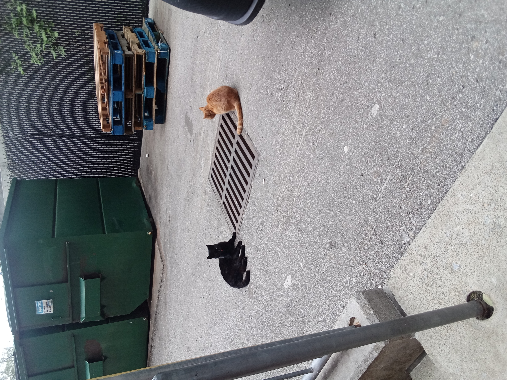
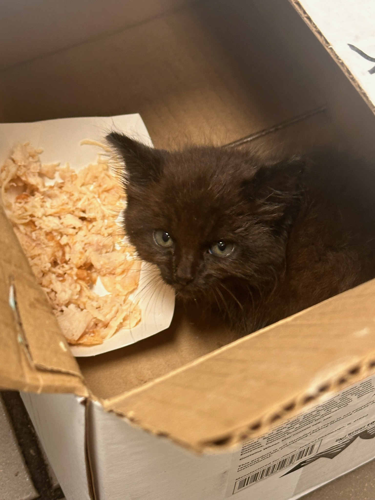

This webpage was created using HTML5 and CSS3. The font size has been increased to 24px, and the background color has been changed to a gradient of blue and red. The text has been aligned to the center of the page, and the font family has been changed to Arial, sans-serif.
Tabitha and Black
Tabitha is a, well you guessed it a little tabbi cat. She is very friendly and always looking for a pet and a handout. She also likes to play and chase birds and insects.
Tabitha has a habit of jumping all over the place. She is also a bit stubborn and sometimes gets annoyed by people who don't like her.

Black is a jet black short-haired cat that is Tabithas best friend. They are always seen to gether playing or grooming each other. Black is more skiddish than Tabitha, but once he sees her warm up to someone, he can't get enough pets and belly rubs.
Mr "Memphis" Pickles
Mr Pickles was rescuded from the Jimmy Johns restaraunt I work at. I first noticed him meowing in a storm basin. After a couple of weeks of feeding he found the courrage to come up to the store, where my coworker picked him up and put him in a box with some fresh chicken.
Mr. Pickles has now gotten used to my coworker as his new owner. His little personality has come out full force and he is going to be a wonderful cat.

Cat Lifestyle
Cats are known for their playful nature. They love to chase and play with toys and toys. They also love to eat and drink. Cats are also known for their loyalty and affection. They can be very loyal and protective of their owners.
Cats can also be very social and loving. They are known for their love for cuddles and their ability to form strong bond with their owners. Cats are also known for their love for food and being very hungry.
6
Fun Facts About Cats
Cats are the only mammals that are endothermic, meaning they live entirely on food. They also have a long lifespan of about 15 years. Cats are known for their love for cuddles, and they are a great source of companionship for people.
Cats can also be found in many different countries, from Africa to Asia. They are known for their playful nature and love for adventure. Cats are also known for their intelligence and ability to learn.